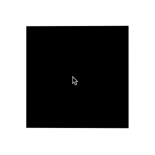

- 54 角向渐变的妙用
- 53 有趣的六芒星能力图动画
- 52 有意思的气泡 Loading 效果
- 51 CSS 原生支持的三角函数
- 50 有意思的网格下落加载效果
- 49 有意思的 Emoji 3D 表情切换效果
- 48 神奇的 3D 磨砂玻璃透视效果
- 47 抢先体验！超强大的 Anchor Positioning 锚点定位
- 46 CSS 也能实现碰撞检测
- 45 现代 CSS 解决方案 - 数学函数 Round
- 44 现代 CSS 解决方案 - 原生嵌套
- 43 神奇的背景，生化危机4日食 Loading 动画还原
- 42 当路径动画遇到滚动驱动
- 41 CSS 还原拉斯维加斯球数字动画
- 40 单标签下多色块随机文字随机颜色动画
- 39 CSS 也能实现 if 判断？实现动态高度下的不同样式展现
- 38 Flex 布局下居中溢出滚动截断问题
- 37 带圆角的虚线边框
- 36 现代 CSS 解决方案：文字颜色自动适配背景色
- 35 神奇的 3D 卡片反光闪烁动效
- 34 现代 CSS 解决方案：accent-color 强调色
- 33 巧用 has 和 drop-shadow 实现复杂布局效果
- 32 巧用 CSS + SVG 实现复杂线条光效动画
- 31 极具创意的鼠标交互动画
- 30 标准滚动条控制规范 scrollbar-color 和 scrollbar-width
- 29 类 ChatGpt 多行文本打字效果
- 28 神奇的卡片 Hover 效果与 Blur 的特性探究
- 27 渐变边框文字效果
- 26 巧妙使用多种方式实现单侧阴影
- 25 全尺寸的带圆角的渐变边框
- 24 开发中保证你用得到的 css 小技巧
- 23 您应该了解的 15 个有用的 CSS 属性
- 22 CSS 行元素的截断样式 box-decoration-break 属性
- 21 用 SASS 简化媒体查询
- 20 为什么你应该停止使用传统的 margin 和 padding 来设置 CSS 样式
- 19 sass 优化响应式布局代码
- 18 盘点 CSS 文本两端对齐的 N 种方式
- 17 如何修改滚动条的样式
- 16 CSS 模拟图片透明的棋盘背景
- 15 文本描边完美实现
- 14 你需要自定义 @property 而不是 CSS 变量的情况
- 13 从高度 0 过渡到自动高度
- 12 一些 css 语法解释
- 11 scss 日常用法
- 10 sass 指南
- 09 CSS 颜色设置透明度的新姿势
- 08 CSS 属性 appearance
- 07 CSS 动画性能优化
- 06 CSS 功能特性
- 05 CSS 中的 var() 函数
- 04 15 个你不知道的 CSS 属性
- 03 will-change
- 02 normalize.css 清除元素默认样式
- 01 纯 CSS 获取屏幕宽高
神奇的 3D 磨砂玻璃透视效果
HaoTian · 2024-12-17 11:12:07
最近，群友分享了一个很有意思的效果：
原效果的网址：frosted-glass
该效果的几个核心点：
- 毛玻璃磨砂效果
- 卡片的 3D 旋转跟随效果
- 整体透明度和磨砂感、以及卡片的 3D 形态会随着用户移动鼠标而进行动态变化
原效果实现的较为复杂，并且实际体验卡顿感较强。本文，我们就将尝试一步一步用更为简单的方式还原复现这个效果。
构建基础骨架
首先，我们快速实现整个效果的基础骨架。其核心代码如下：
<div id="element"></div>
body {
width: 100vw;
height: 100vh;
background: url(https://picsum.photos/id/242/1920/1080);
}
div {
width: 600px;
height: 300px;
background: #fff;
box-shadow: 0 20px 40px 1px rgba(0, 0, 0, 0.12);
}
基于上述代码，我们可以快速得到如下效果：

这里，我们实现了一个白色背景的 div 元素，并且给 body 设置了一张背景图。
接着，我们就一步一步实现上面说的 3 个关键点：
- 毛玻璃磨砂效果
- 3D 卡片效果
- 整体透明度和磨砂感、以及卡片的 3D 形态会随着用户移动鼠标而进行动态变化
实现毛玻璃磨砂效果
毛玻璃磨砂效果，是最为简单的一步。在 CSS 中，我们如今可以使用 backdrop-filter 滤镜进行实现。
毛玻璃效果是一种视觉效果，通常用于美化设计或增加隐私保护。它通过模糊化图像的某些区域来达到这种效果，使图像看起来有一层轻微的模糊，同时仍然清晰可见。毛玻璃效果可以应用于图像、文本、按钮等各种 UI 元素上，为用户提供更加优雅和良好的视觉体验。
backdrop-filter 滤镜最为常见的使用场景，就是实现毛玻璃效果。
在没有 backdrop-filter 属性前，我们想实现如下所示的毛玻璃效果，是比较困难的：
在有了 backdrop-filter 属性后，毛玻璃效果的实现就非常简单了。
仅仅需要如下一段简单的代码：
<div class="bg">
<div>Normal</div>
<div class="g-filter">filter</div>
<div class="g-backdrop-filter">backdrop-filter</div>
</div>
.bg {
background: url(image.png);
& > div {
width: 300px;
height: 200px;
background: rgba(255, 255, 255, 0.7);
}
.g-filter {
filter: blur(6px);
}
.g-backdrop-filter {
backdrop-filter: blur(6px);
}
}
下面列出了 3 种效果，分别是：
- 正常情况，没有使用任何滤镜；
- 元素作用了
filter: blur(6px)； - 元素作用了
backdrop-filter: blur(6px)。
效果对比图如下：
完整代码，戳这里：CodePen Demo -- filter 与 backdrop-filter 对比
这里的核心就在于，使用透明背景，加上 backdrop-filter: blur() 即可实现毛玻璃效果。
我们改造一下我们的代码，添加上毛玻璃效果：
div {
width: 600px;
height: 300px;
backdrop-filter: blur(15px);
background: linear-gradient(rgba(255, 255, 255, 0.1), rgba(0, 0, 0, 0.5));
box-shadow: 0 20px 40px 1px rgba(0, 0, 0, 0.12);
}
效果如下：

卡片的 3D 旋转跟随效果
OK，接下来，如何实现 3D 卡片效果呢？
这个效果之前在 让交互更加生动！有意思的鼠标跟随 3D 旋转动效 实现过一次，我们复习一下。
这个交互效果主要有两个核心：
- 借助了 CSS 3D 的能力
- 元素的旋转需要和鼠标的移动相结合
我们的目标是实现这样一个动画效果：

这里，我们其实有两个核心元素：
- 鼠标活动区域
- 旋转物体本身
鼠标在鼠标活动区域内的移动，会影响旋转物体本身的 3D 旋转，而旋转的方向其实可以被分解为 X 轴方向与 Y 轴方向。
我们来看一下，假设我们的 HTML 结构如下：
<body>
<div id="element"></div>
</body>
得到这样一个图形：

这里，body 的范围就是整个鼠标可活动区域，也是我们添加鼠标的 mousemove 事件的宿主 target，而 #element 就是需要跟随鼠标一起转动的旋转物体本身。
因为整个效果是需要基于 CSS 3D 的，我们首先加上简单的 CSS 3D 效果：
body {
width: 100vw;
height: 100vh;
transform-style: preserve-3d;
perspective: 500px;
}
div {
width: 200px;
height: 200px;
background: #000;
transform-style: preserve-3d;
}
效果如下：

没有什么不一样。这是因为还没有添加任何的 3D 变换，我们给元素添加 X、Y 两个方向的 rotate() 试一下（注意，这里默认的旋转圆心即是元素中心）：
div {
transform: rotateX(15deg) rotateY(30deg);
}
效果如下，是有那么点意思了：

好，接下来，我们的目标就是通过结合 mouseover 事件，让元素动起来。
控制 X 方向的移动
当然，为了更加容易理解，我们把动画拆分为 X、Y 两个方向上的移动。首先看 X 方向上的移动：
这里，我们需要以元素的中心为界：
- 当鼠标在中心右侧连续移动，元素绕 Y 轴移动，并且值从 0 开始，越来越大，范围为(0, +∞)deg
- 反之，当鼠标在中心左侧连续移动，元素绕 Y 轴移动，并且值从 0 开始，越来越小，范围为(-∞, 0)deg
这样，我们可以得到这样一个公式：
rotateY = (鼠标 x 坐标 - 元素左上角 x 坐标 - 元素宽度的一半)deg
通过绑定 onmousemove 事件，我们尝试一下：
const mouseOverContainer = document.getElementsByTagName("body")[0];
const element = document.getElementById("element");
mouseOverContainer.onmousemove = function (e) {
let box = element.getBoundingClientRect();
let calcY = e.clientX - box.x - box.width / 2;
element.style.transform = "rotateY(" + calcY + "deg) ";
};
效果如下：
好吧，旋转的太夸张了，因此，我们需要加一个倍数进行控制：
const multiple = 20;
const mouseOverContainer = document.getElementsByTagName("body")[0];
const element = document.getElementById("element");
mouseOverContainer.onmousemove = function (e) {
let box = element.getBoundingClientRect();
let calcY = (e.clientX - box.x - box.width / 2) / multiple;
element.style.transform = "rotateY(" + calcY + "deg) ";
};
通过一个倍数约束后，效果好了不少：

控制 Y 方向的移动
同理，我们利用上述的方式，同样可以控制 Y 方向上的移动：
const multiple = 20;
const mouseOverContainer = document.getElementsByTagName("body")[0];
const element = document.getElementById("element");
mouseOverContainer.onmousemove = function (e) {
let box = element.getBoundingClientRect();
let calcX = (e.clientY - box.y - box.height / 2) / multiple;
element.style.transform = "rotateX(" + calcX + "deg) ";
};
效果如下：

当然，在这里，我们会发现方向是元素运动的方向是反的，所以需要做一下取反处理，修改下 calcX 的值，乘以一个 -1 即可：
let calcX = ((e.clientY - box.y - box.height / 2) / multiple) * -1;
结合 X、Y 方向的移动
OK，到这里，我们只需要把上述的结果合并一下即可，同时，上面我们使用的是 onmousemove 触发每一次动画移动。现代 Web 动画中，我们更倾向于使用 requestAnimationFrame 去优化我们的动画，确保每一帧渲染一次动画即可。
完整的改造后的代码如下：
const multiple = 20;
const mouseOverContainer = document.getElementsByTagName("body")[0];
const element = document.getElementById("element");
function transformElement(x, y) {
let box = element.getBoundingClientRect();
let calcX = -(y - box.y - box.height / 2) / multiple;
let calcY = (x - box.x - box.width / 2) / multiple;
element.style.transform =
"rotateX(" + calcX + "deg) " + "rotateY(" + calcY + "deg)";
}
mouseOverContainer.addEventListener("mousemove", (e) => {
window.requestAnimationFrame(function () {
transformElement(e.clientX, e.clientY);
});
});
至此，我们就能简单的实现题图所示的鼠标跟随 3D 旋转动效：
设置平滑出入
现在，还有最后一个问题，就是当我们的鼠标离开活动区域时，元素的 transform 将停留在最后一帧，正确的表现应该是复原到原状。因此，我们还需要添加一些事件监听做到元素的平滑复位。
通过一个 mouseleave 事件配合元素的 transition 即可。
div {
// 与上述保持一致...
transition: all 0.2s;
}
mouseOverContainer.addEventListener("mouseleave", (e) => {
window.requestAnimationFrame(function () {
element.style.transform = "rotateX(0) rotateY(0)";
});
});
至此，我们就可以完美的实现平滑出入，整体效果最终如下：

完整的代码，你可以戳这里：CodePen Demo -- CSS 3D Rotate With Mouse Move
基于上述的铺垫，我们改造一下我们的 DEMO，只是把上述 DEMO 中中心的黑块，替换成我们的毛玻璃元素，将背景替换成图片。
完整的代码：
<div id="element"></div>
CSS 代码：
body {
width: 100vw;
height: 100vh;
transform-style: preserve-3d;
background: url(https://picsum.photos/id/242/1920/1080);
}
div {
width: 600px;
height: 300px;
transform-style: preserve-3d;
backdrop-filter: blur(15px);
background: linear-gradient(rgba(255, 255, 255, 0.1), rgba(0, 0, 0, 0.5));
transition: all 0.3s;
}
Javascript 代码：
const multiple = 25;
const mouseOverContainer = document.getElementsByTagName("body")[0];
const element = document.getElementById("element");
function transformElement(x, y) {
const box = element.getBoundingClientRect();
const calcX = -(y - box.y - box.height / 2) / multiple;
const calcY = (x - box.x - box.width / 2) / multiple;
let angle = Math.floor(
getMouseAngle(y - box.y - box.height / 2, x - box.x - box.width / 2)
);
element.style.transform =
"rotateX(" + calcX + "deg) " + "rotateY(" + calcY + "deg)";
}
mouseOverContainer.addEventListener("mousemove", (e) => {
window.requestAnimationFrame(function () {
transformElement(e.clientX, e.clientY);
});
});
mouseOverContainer.addEventListener("mouseleave", (e) => {
window.requestAnimationFrame(function () {
element.style.transform = "rotateX(0) rotateY(0)";
});
});
这样，我们的当前的整个 DEMO 效果就变成了这样：

透明度变化
OK，最后，剩下最关键一步。我们需要让整个卡片的磨砂感和透明度不一样，随着整体鼠标的 Hover 位置而实时发生变化。
这里我们会用到两个核心是技术：
- mask 遮罩，改变 background 的透明度
- 利用 CSS @Property 实现 mask 和 background 的渐变角度变换动画效果
这里是整个效果最为复杂的地方。
我们一个一个来理解。
首先，基于 background 透明度实现的毛玻璃效果，我们可以利用 mask 让整个毛玻璃效果的透明度不均匀一致。
什么意思呢？看看这张图：
利用 mask，我们就能让毛玻璃效果不均与。上述对比图中，图 2 和 图 3 的 mask 的角度分别是 90deg、270deg。
那么，我们只需要在 HOVER 的过程中，动态的算出当前鼠标的位置相对于元素中心的角度值，赋值给 mask 即可！
像是这样：mask: linear-gradient(var(--angle), rgba(255, 255, 255, .5), #fff);，其中 --angle 的值，由 JavaScript 计算，实时传给 mask 即可。
并且，由于，渐变是不支持过渡动画的，因此，我们需要 CSS @Property 来实现 mask 角度变化的动画效果。
这里核心的代码如下：
div {
width: 600px;
height: 300px;
backdrop-filter: blur(15px);
background: linear-gradient(
var(--angle),
rgba(255, 255, 255, 0.1),
rgba(0, 0, 0, 0.5)
);
mask: linear-gradient(var(--angle), rgba(255, 255, 255, 0.5), #fff);
transition: all 0.3s, --angle 0.3s;
}
const multiple = 25;
const mouseOverContainer = document.getElementsByTagName("body")[0];
const element = document.getElementById("element");
function transformElement(x, y) {
const box = element.getBoundingClientRect();
const calcX = -(y - box.y - box.height / 2) / multiple;
const calcY = (x - box.x - box.width / 2) / multiple;
let angle = Math.floor(
getMouseAngle(y - box.y - box.height / 2, x - box.x - box.width / 2)
);
element.style.transform =
"rotateX(" + calcX + "deg) " + "rotateY(" + calcY + "deg)";
element.style.setProperty("--angle", `${-angle}deg`);
}
function getMouseAngle(x, y) {
const radians = Math.atan2(y, x);
let angle = radians * (180 / Math.PI);
if (angle < 0) {
angle += 360;
}
return angle;
}
mouseOverContainer.addEventListener("mousemove", (e) => {
window.requestAnimationFrame(function () {
transformElement(e.clientX, e.clientY);
});
});
mouseOverContainer.addEventListener("mouseleave", (e) => {
window.requestAnimationFrame(function () {
element.style.transform = "rotateX(0) rotateY(0)";
});
});
上面的代码，有两点需要再解释一下：
getMouseAngle()·用于计算当前鼠标位置相对于元素中心点的角度值- 我们同时将角度变化设置给了
background渐变背景，这样会让背景的渐变角度也跟随变化，能够让整体效果更好
如此一下，我们的整体效果就变成了这样：
完美！整体动画连贯，hover 时不卡顿，而且效果丝滑了不少。
至此，我们就完美的还原了整个效果。当然，在最后的难点这里，如果你对 mask 和 CSS @Property 之前并不了解，代码看起来可能会有所困难，你可以先看看如下两篇文章：
完整的 DEMO 效果，你可以戳这里 CodePen Demo -- CSS 3D Rotate With Mouse Move